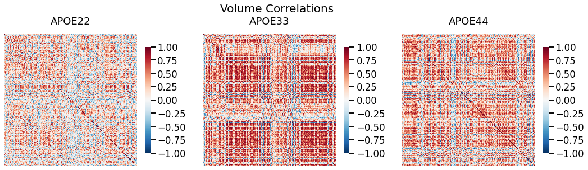
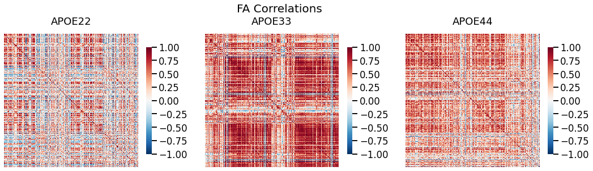
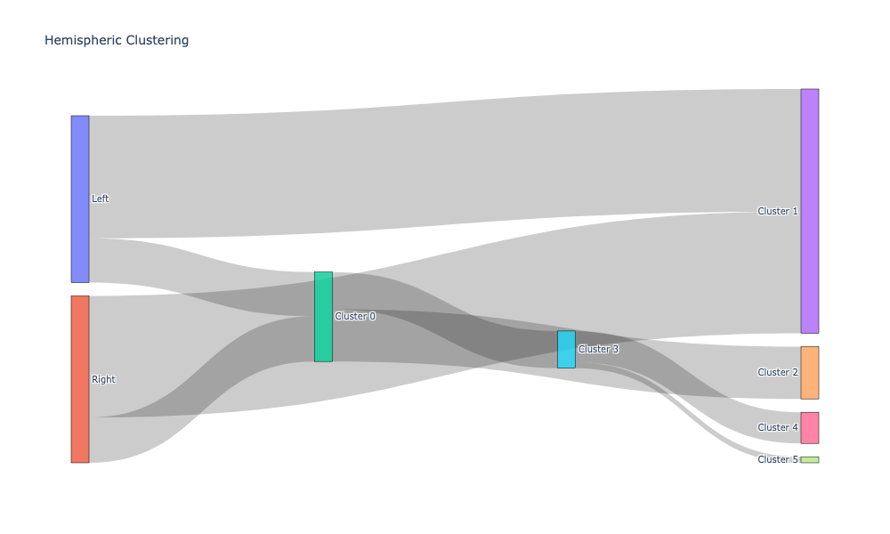
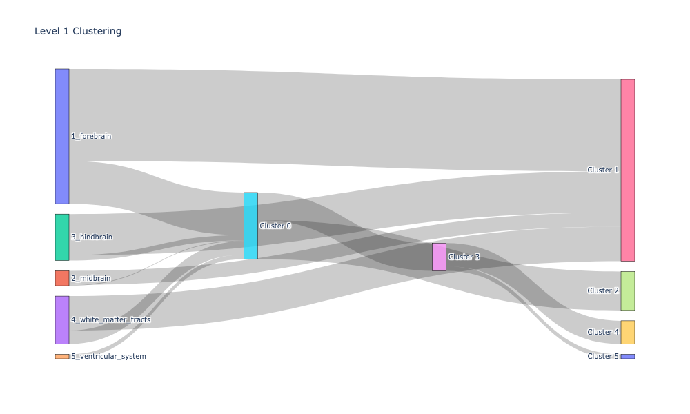
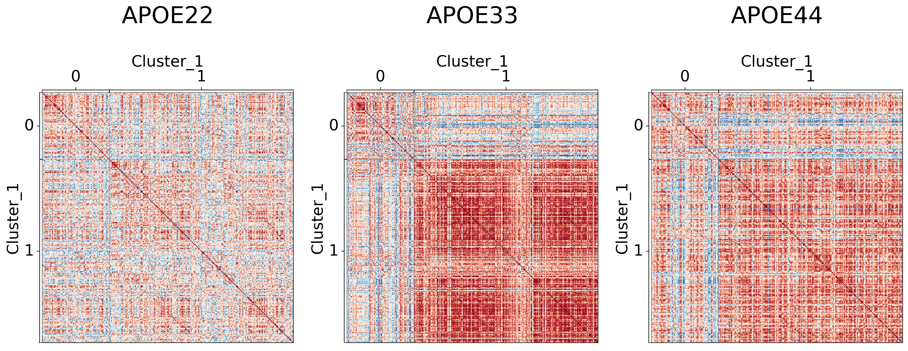
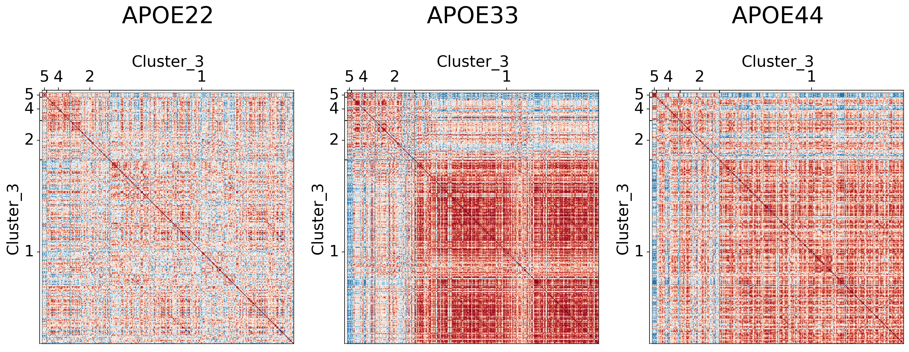

Test whether brain volume and FA are independent
Contents
import pandas as pd
import graspologic as gp
import seaborn as sns
import hyppo
import matplotlib.pyplot as plt
import numpy as np
import plotly.graph_objects as go
import matplotlib.cm
from sklearn.preprocessing import LabelEncoder
from graspologic.embed import OmnibusEmbed, select_svd
import plotly.io as pio
pio.renderers.default="png"
## Read the data
key = pd.read_csv('../data/processed/key.csv')
data = pd.read_csv('../data/processed/mouses-volumes.csv')
fa = pd.read_csv('../data/processed/mouses-fa.csv')
data.set_index(key.DWI, inplace=True)
fa.set_index(key.DWI, inplace=True)
genotypes = ['APOE22', 'APOE33', 'APOE44']
gen_animals = {genotype: None for genotype in genotypes}
for genotype in genotypes:
gen_animals[genotype] = key.loc[key['Genotype'] == genotype]['DWI'].tolist()
vol_dat = {genotype: [] for genotype in genotypes}
fa_dat = {genotype: [] for genotype in genotypes}
for genotype in genotypes:
vol_dat[genotype] = data.loc[gen_animals[genotype]].to_numpy()
fa_dat[genotype] = fa.loc[gen_animals[genotype]].to_numpy()
## Compute correlations
vol_cor = {genotype: gp.utils.symmetrize(np.corrcoef(dat, rowvar=False)) for (genotype, dat) in vol_dat.items()}
fa_cor = {genotype: gp.utils.symmetrize(np.corrcoef(dat, rowvar=False)) for (genotype, dat) in fa_dat.items()}
## Plot to make sure nothing is wrong
fig, ax = plt.subplots(1, 3, figsize=(18, 5))
for (i, genotype) in enumerate(vol_cor.keys()):
fig.suptitle("Volume Correlations", fontsize=20)
gp.plot.heatmap(vol_cor[genotype], title=genotype, ax=ax[i], vmin=-1, vmax=1)
fig, ax = plt.subplots(1, 3, figsize=(18, 5))
for (i, genotype) in enumerate(fa_cor.keys()):
fig.suptitle("FA Correlations", fontsize=20)
gp.plot.heatmap(fa_cor[genotype], title=genotype, ax=ax[i], vmin=-1, vmax=1)
## Node hierarchical label data
node_labels = pd.read_csv("../data/processed/node_label_dictionary.csv")


Test whether brain volume and FA are independent#
If FA and brain volume values are independent, it suggest that FA does not contain any information about brain volume, suggesting that using FA should not yield any different results
pvals = []
for genotype in genotypes:
dcorr = hyppo.independence.Dcorr()
stat, pval = dcorr.test(vol_dat[genotype].T, fa_dat[genotype].T)
pvals.append([genotype, pval])
pval_df = pd.DataFrame(pvals, columns=["Genotype", "P-value"])
pval_df
| Genotype | P-value | |
|---|---|---|
| 0 | APOE22 | 0.000121 |
| 1 | APOE33 | 0.000197 |
| 2 | APOE44 | 0.000104 |
These p-values suggest that FA and brain volume are depedent.
Testing whether brain volume and FA correlations are independent#
Similar analysis, but we are evaluating the correlations
pvals = []
for genotype in genotypes:
dcorr = hyppo.independence.Dcorr(compute_distance=None)
stat, pval = dcorr.test(vol_cor[genotype].T, fa_cor[genotype].T)
pvals.append([genotype, pval])
pval_df = pd.DataFrame(pvals, columns=["Genotype", "P-value"])
pval_df
| Genotype | P-value | |
|---|---|---|
| 0 | APOE22 | 0.000117 |
| 1 | APOE33 | 0.000002 |
| 2 | APOE44 | 0.000253 |
Again, the p-values suggest that brain volume and FA correlations are not independent
Using omnibus embedding and multiple adjacency spectral embedding to simulataneously embed brain volume and FA#
omni = OmnibusEmbed()
embeddings = [omni.fit_transform([vol_cor[genotype], fa_cor[genotype]])[0] for genotype in genotypes]
embeddings = np.hstack(embeddings)
embeddings.shape
(332, 13)
U, D, V = select_svd(embeddings)
D.shape
(2,)
Hierarchical clustering on the embeddings#
cluster = gp.cluster.DivisiveCluster(max_level=3)
cluster_labels = cluster.fit_predict(U, fcluster=True)
cluster_label_df = pd.DataFrame(cluster_labels, columns=["cluster_level_1", "cluster_level_2", "cluster_level_3"])
def count_groups(label_matrix):
levels = label_matrix.shape[1] - 1
d = []
for level in range(levels):
upper_cluster_ids = np.unique(label_matrix[:, level])
for upper_cluster_id in upper_cluster_ids:
lower_cluster_ids, counts = np.unique(
label_matrix[label_matrix[:, level] == upper_cluster_id][:, level + 1], return_counts=True
)
for idx, lower_cluster_id in enumerate(lower_cluster_ids):
if upper_cluster_id == lower_cluster_id:
lower_cluster_id = None
d.append((upper_cluster_id, lower_cluster_id, counts[idx]))
d = np.array(d)
source = d[:, 0]
target = d[:, 1]
value = d[:, 2]
return source, target, value
def append_apriori_labels(apriori_labels, cluster_matrix):
encoder = LabelEncoder()
apriori_labels_encoded = encoder.fit_transform(apriori_labels)
apriori_labels_encoded = apriori_labels_encoded.reshape(-1, 1)
# Increase the original cluster_matrix labels
cluster_matrix_ = cluster_matrix + np.max(apriori_labels_encoded) + 1
out = np.hstack([apriori_labels_encoded, cluster_matrix_])
return out, list(encoder.classes_)
hemispheric_clusters, encoded_labels = append_apriori_labels(node_labels.Hemisphere, cluster_labels)
source, target, value = count_groups(hemispheric_clusters)
Visualizing Sankey#
fig = go.Figure(data=[go.Sankey(
node = dict(
pad = 15,
thickness = 20,
line = dict(color = "black", width = 0.5),
label = encoded_labels + [f"Cluster {i}" for i in range(np.max(hemispheric_clusters))]
),
link = dict(
source = source,
target = target,
value = value
))])
fig.update_layout(title_text="Hemispheric Clustering", font_size=10)
fig.show(dpi=300, width=1000, height=600)

level_1_clusters, encoded_labels = append_apriori_labels(node_labels.Level_1, cluster_labels)
source, target, value = count_groups(level_1_clusters)
fig = go.Figure(data=[go.Sankey(
node = dict(
pad = 15,
thickness = 20,
line = dict(color = "black", width = 0.5),
label = encoded_labels + [f"Cluster {i}" for i in range(np.max(level_1_clusters[0]))],
),
link = dict(
source = source,
target = target,
value = value
))])
fig.update_layout(title_text="Level 1 Clustering", font_size=10)
fig.show(dpi=300, width=1000, height=600)

cl = pd.DataFrame(cluster_labels, columns=[f"Cluster_{i}" for i in range(1, 4)])
meta = pd.concat([node_labels, cl], axis=1)
meta.head()
## Plot to make sure nothing is wrong
for l in range(3):
fig, ax = plt.subplots(
ncols=3,
figsize=(20, 10),
#constrained_layout=True,
dpi=300,
gridspec_kw=dict(width_ratios=[1, 1, 1])
)
for (i, genotype) in enumerate(vol_cor.keys()):
gp.plot.adjplot(
vol_cor[genotype],
ax=ax[i],
vmin=-1,
vmax=1,
meta=meta,
group=[f'Cluster_{l+1}'],
)
ax[i].set_title(f"{genotype}", pad=90, size=30)
fig.savefig(f"./figures/2022-02-02-multigraph-clustering-level-{l + 1}.png", bbox_inches='tight')


Comparing results to prior clusterings#
mase = gp.embed.MultipleASE()
Vhat = mase.fit_transform([corr for _, corr in vol_cor.items()])
cluster = gp.cluster.DivisiveCluster(max_level=3)
cluster_labels = cluster.fit_predict(Vhat, fcluster=True)
cluster_label_df_ = pd.DataFrame(cluster_labels, columns=["cluster_level_1", "cluster_level_2", "cluster_level_3"])
from sklearn.metrics import adjusted_rand_score
adjusted_rand_score(cluster_label_df_.cluster_level_3, cluster_label_df.cluster_level_3)
0.6562743402239853